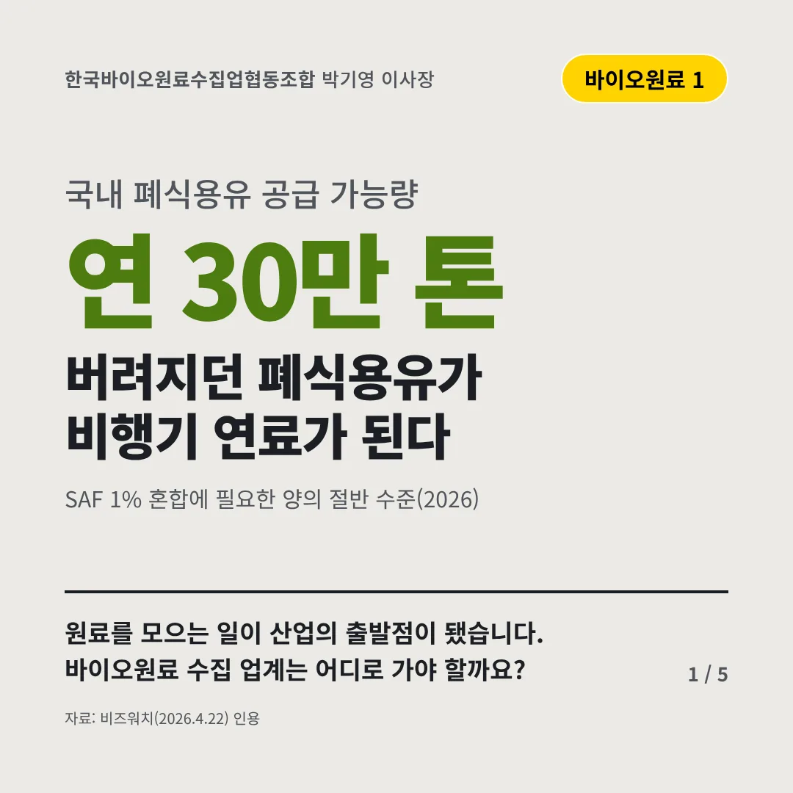
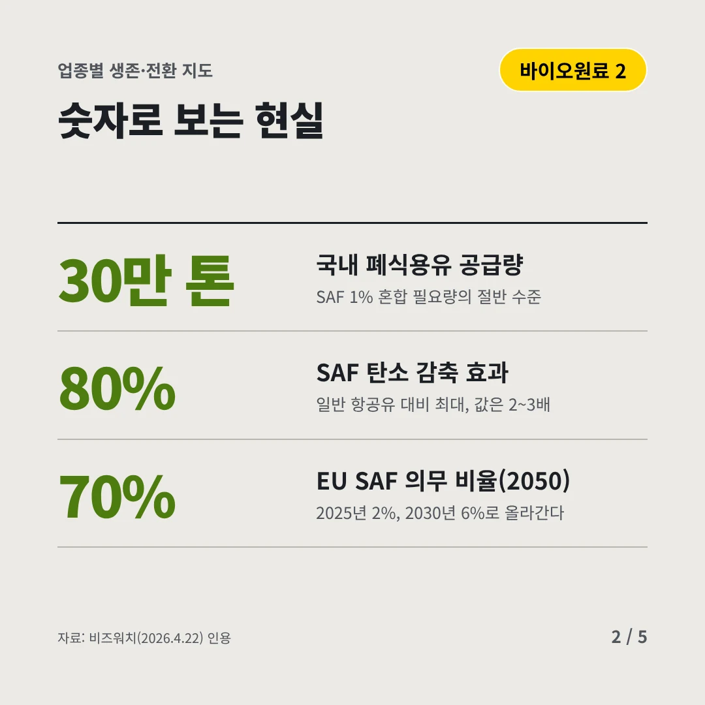
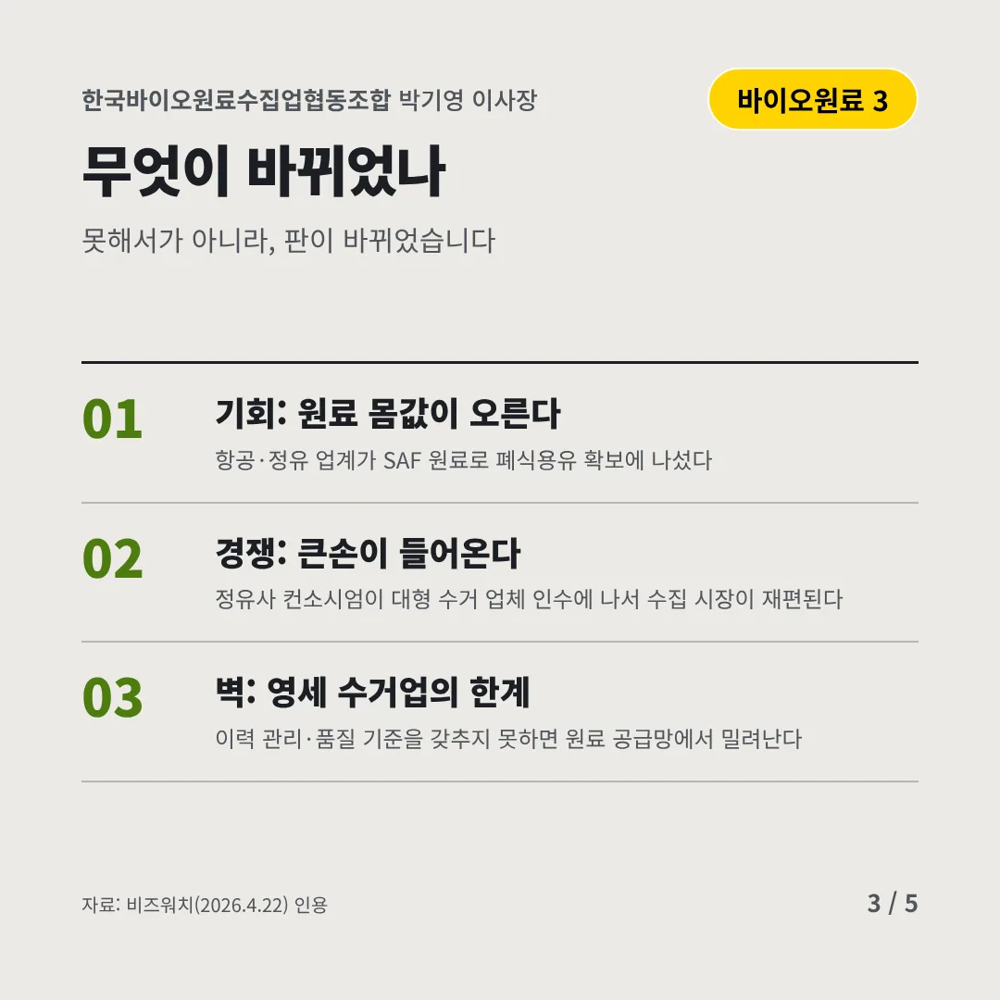
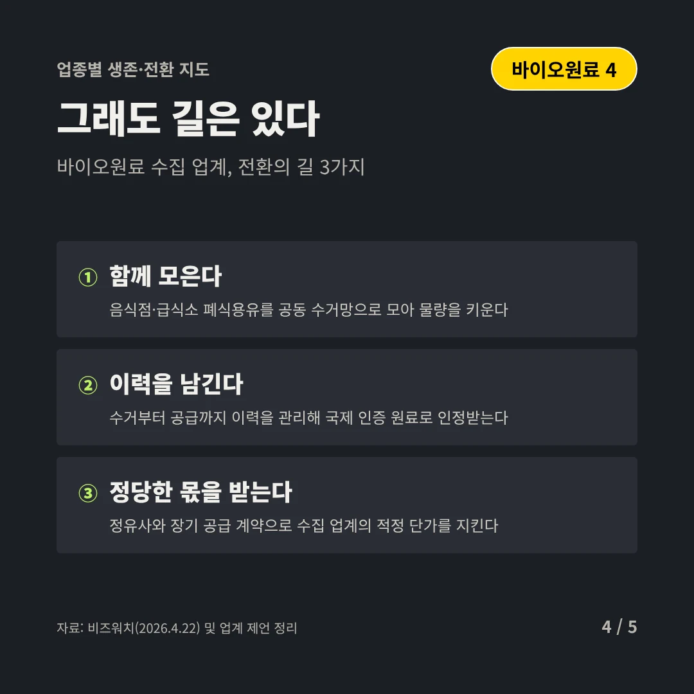
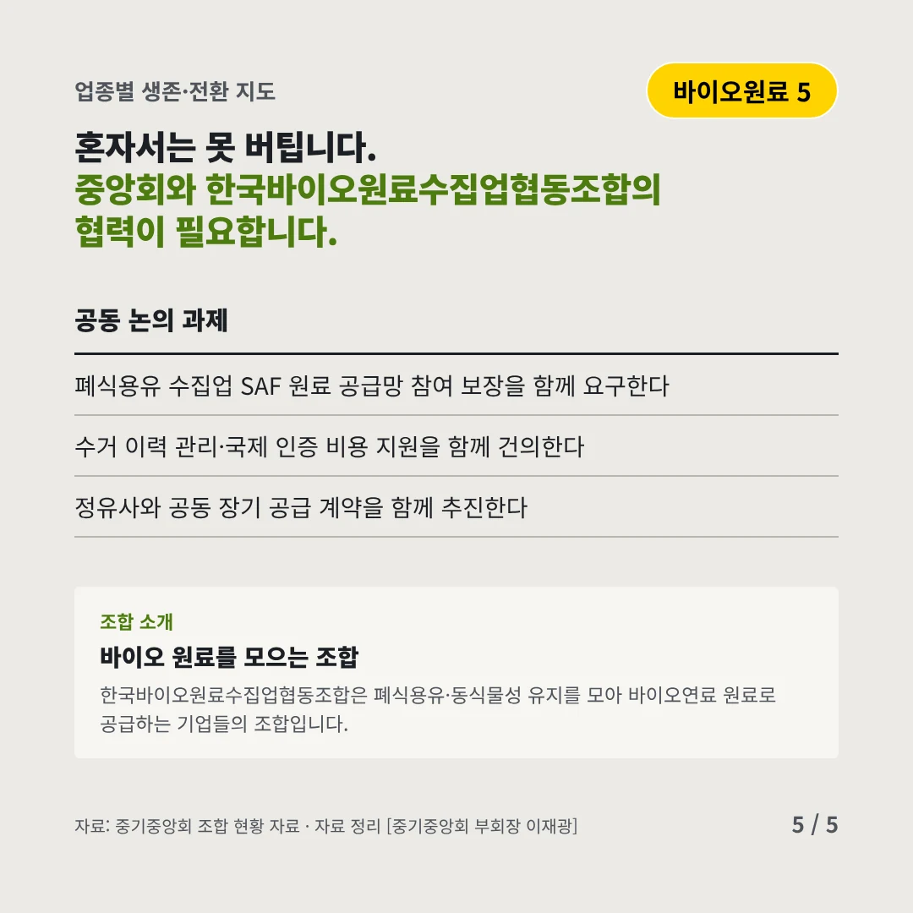
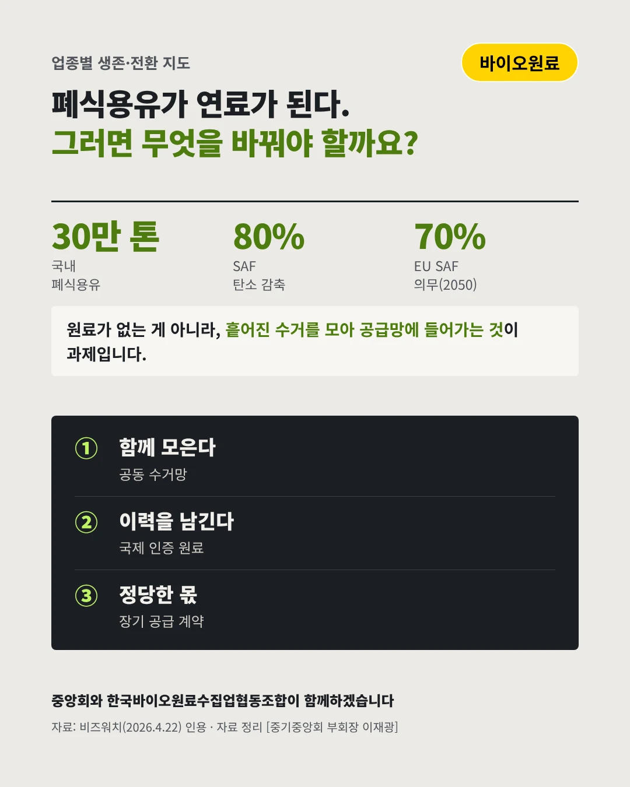

한국바이오원료수집업협동조합
버려지던 폐식용유가 비행기 연료가 된다
연 30만 톤 국내 폐식용유 공급 가능량






원료를 모으는 일이 산업의 출발점이 됐습니다. 바이오원료 수집 업계는 어디로 가야 할까요?
숫자로 보는 현실
- 30만 톤국내 폐식용유 공급량SAF 1% 혼합 필요량의 절반 수준
- 80%SAF 탄소 감축 효과일반 항공유 대비 최대, 값은 2~3배
- 70%EU SAF 의무 비율(2050)2025년 2%, 2030년 6%로 올라간다
무엇이 바뀌었나
- 기회: 원료 몸값이 오른다항공·정유 업계가 SAF 원료로 폐식용유 확보에 나섰다
- 경쟁: 큰손이 들어온다정유사 컨소시엄이 대형 수거 업체 인수에 나서 수집 시장이 재편된다
- 벽: 영세 수거업의 한계이력 관리·품질 기준을 갖추지 못하면 원료 공급망에서 밀려난다
그래도 길은 있다
- 함께 모은다음식점·급식소 폐식용유를 공동 수거망으로 모아 물량을 키운다
- 이력을 남긴다수거부터 공급까지 이력을 관리해 국제 인증 원료로 인정받는다
- 정당한 몫을 받는다정유사와 장기 공급 계약으로 수집 업계의 적정 단가를 지킨다
한 장 요약

조합 소개
한국바이오원료수집업협동조합은 폐식용유·동식물성 유지를 모아 바이오연료 원료로 공급하는 기업들의 조합입니다.
자료: 비즈워치(2026.4.22)